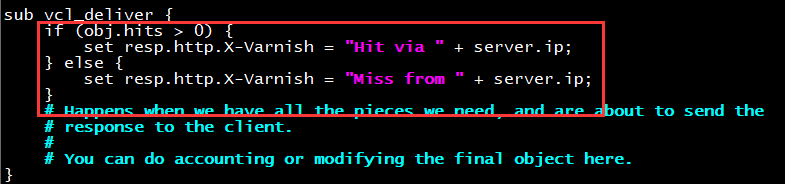
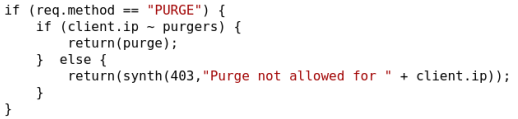

一、缓存基本概念
缓存是指把对某些请求的结果缓存下来，下次请求直接使用数据响应，这样极大的节省了系统获取源数据
资源的时间，若我们把大量的请求结果都使用缓存服务器来响应，那么我们可以大大减少计算机数量减少
成本。
数据缓存：从后端关系系数据库加载到应用服务器进行缓存，存在于数据库与服务器之间，一般是缓存
SELECT语句。常用有：redis，memcached
页面缓存：对静态内容进行缓存，存在于调度器与WEB服务器之间，通常只是缓存GET,HEAD方法的请
求。常用有：squid-cache,varinish-cache
缓存命中：hit，多次查询能够在缓存中找到对应项
衡量缓存命中率有两种标准：
字节命中率
请求命中率
一般来说，当缓存命中率30%以上能够带来正向作用
代理式缓存：页面缓存一般都是代理式缓存，要成为代理式缓存，首先它是台代理服务器
旁挂式缓存：数据缓存一般都是旁挂式缓存
页面缓存
squid-cache：历史悠久页面缓存系统，类似于Apache与Nginx的关系
varinish-cache：轻量级页面缓存系统，但稳定性不如squid-cache
基于页面过期时间的缓存机制(**早期)**：
当客户端发起请求时，先到缓存服务器中查找有无对应的缓存，如果没有则将请求发送到后端服务器，后‘’
端服务器发送响应报文并附带过期时间(expires)
存在问题：
(1)当后端数据发送变化时，缓存变为旧内容
(2)当缓存服务器中数据过期时，有可能还会收到相同的客户端请求
根据条件式验证的缓存机制：
存在问题：
粒度大，1秒，可能会出现缓存查询一致，其实内容已发生变化，得到过期内容
解决方法：
添加一个标签Etag，将标签与查询结果一起返回
http 1.1时代：过期时间+条件式验证组合使用
缓存预热：通过自己下载一些网络请求来访问缓存服务器以达到最佳状态
private cache：私有缓存，如浏览器缓存
public cache：公共缓存，可能不止一级，如CDN,页面缓存系统
一般公有缓存+私有缓存应该能到达90%的缓存命中率
CDN：Ccontent Delivery Network内容分发系统
距离判定
链路状态；判定
二、Varnish缓存服务介绍
epel源提供，支持三类缓存：
内存缓存：malloc，重启后所有缓存项失效；
磁盘缓存：file，黑盒，重启后所有缓存项失效；
持久缓存：persistent(实验阶段)，黑盒，重启后所有缓存项有效
默认监听端口：6081,6082(管理端口)
Varinish**官方架构图**
varnish主要包含三个部分：
management：提供管理接口，并控制缓存进程的特性
child/cache：提供缓存功能，记录日志，访问控制，后端服务器管理
vcl：给child/cache提供配置文件的编译
Varinishd服务配置：
/etc/varnish/varnish.params： 配置varnish服务进程的工作特性，例如监听的地址和端口，缓存机制；
/etc/varnish/default.vcl：配置各Child/Cache线程的工作属性；
主程序：
/usr/sbin/varnishd
CLI interface：
/usr/bin/varnishadm
Shared Memory Log交互工具：
/usr/bin/varnishhist
/usr/bin/varnishlog
/usr/bin/varnishncsa
/usr/bin/varnishstat
/usr/bin/varnishtop
测试工具程序：
/usr/bin/varnishtest
VCL配置文件重载程序：
/usr/sbin/varnish_reload_vcl
Systemd Unit File：
/usr/lib/systemd/system/varnish.service #varnish服务
/usr/lib/systemd/system/varnishlog.service #logger daemon
/usr/lib/systemd/system/varnishncsa.service #lgger daemon in apache format
实验：实现varnishd**缓存基本功能**
前期准备：
虚拟机2台
varinishd服务器：192.168.30.10 系统版本：CentOS 7.4
node1：192.168.30.27 系统版本：CentOS 7.4
varinish：
yum install varnish
systemctl start varnishd
此时访问varnish的6081端口，显示连接后端失败
配置varnish：
vim /etc/varnish/default.vcl
varnish_reload acl
node1：
开启WEB服务
echo backend Server node1 > /var/www/html/index.html
此时再次访问192.168.30.10:6081，基本的varnish缓存功能就实现了
三、VCL语言与状态引擎
相关概念：
”域“专有类型的配置语言；
state engine：状态引擎；
VCL有多个状态引擎，状态之间存在相关性，但状态引擎彼此间互相隔离；每个状态引擎可使用return(x)
指明关联至哪个下一级引擎；每个状态引擎对应于vcl文件中的一个配置段，即为subroutine
vcl_hash –> return(hit) –> vcl_hit
varnish状态引擎类型：
varnish 4.0：
vcl_init
vcl_recv
vcl_hash
vcl_hit
vcl_pass
vcl_miss
vcl_pipe
vcl_waiting
vcl_purge
vcl_deliver
vcl_synth
vcl_fini
vcl_backend_fetch
vcl_backend_response
vcl_backend_error
vcl_recv的默认配置：
sub vcl_recv {
if (req.method == “PRI”) {
/ We do not support SPDY or HTTP/2.0 /
return (synth(405));
}
if (req.method != “GET” &&
req.method != “HEAD” &&
req.method != “PUT” &&
req.method != “POST” &&
req.method != “TRACE” &&
req.method != “OPTIONS” &&
req.method != “DELETE”) {
/ Non-RFC2616 or CONNECT which is weird. /
return (pipe);
}
if (req.method != “GET” && req.method != “HEAD”) {
/ We only deal with GET and HEAD by default /
return (pass);
}
if (req.http.Authorization || req.http.Cookie) {
/ Not cacheable by default /
return (pass);
}
return (hash);
}
}
Client Side：
vcl_recv, vcl_pass, vcl_hit, vcl_miss, vcl_pipe, vcl_purge, vcl_synth, vcl_deliver
vcl_recv：
hash：vcl_hash
pass: vcl_pass
pipe: vcl_pipe
synth: vcl_synth
purge: vcl_hash –> vcl_purge
vcl_hash：
lookup：
hit: vcl_hit
miss: vcl_miss
pass, hit_for_pass: vcl_pass
purge: vcl_purge
Backend Side：
vcl_backend_fetch, vcl_backend_response, vcl_backend_error
两个特殊的引擎：
vcl_init：在处理任何请求之前要执行的vcl代码：主要用于初始化VMODs；
vcl_fini：所有的请求都已经结束，在vcl配置被丢弃时调用；主要用于清理VMODs；
格式：
(1) VCL files start with vcl 4.0;
(2) //, # and / foo / for comments;
(3) Subroutines are declared with the sub keyword; 例如sub vcl_recv { …}；
(4) No loops, state-limited variables（受限于引擎的内建变量）；
(5) Terminating statements with a keyword for next action as argument of the return() function, i.e.: return(action)；用于实现状态引擎转换；
(6) Domain-specific;
Finite State Machine
(1) Each request is processed separately;
(2) Each request is independent from others at any given time;
(3) States are related, but isolated;
(4) return(action); exits one state and instructs Varnish to proceed to the next state;
(5) Built-in VCL code is always present and appended below your own VCL;
语法：
sub subroutine {
…
}
if CONDITION {
…
} else {
…
}
return(), hash_data()
t-in Functions and Keywords
函数：
regsub(str, regex, sub)
regsuball(str, regex, sub)
ban(boolean expression)
hash_data(input)
synthetic(str)
Keywords:
call subroutine， return(action)，new，set，unset
操作符：
==, !=, ~, >, >=, <, <=
逻辑操作符：&&, ||, !
变量赋值：=
示例1：obj.hits是内建变量，用于保存某缓存项的从缓存中命中的次数；
if (obj.hits>0) {
set resp.http.X-Cache = “HIT via” + ” ” + server.ip;
} else {
set resp.http.X-Cache = “MISS from ” + server.ip;
}
vim /etc/varnish/default.vcl

使用curl -I -s http:url 可以判断是否缓存命中
示例2**：判定curl**类型的请求拒绝访问
修改配置文件
vim /etc/varnish/default.vcl
调用配置文件
varnishadm -S /etc/varnish/secret -T 127.0.0.1:6082

切换到另外一台主机进行curl测试：
返回403错误状态码
示例3：判定admin相关的请求拒绝访问
node1：
创建一个名称为admin访问目录：
echo hello,world > /var/www/html/admin/index.html
systemctl reload httpd
正常访问返回如下：
修改配置文件：
vim /etc/varnish/default.vcl

调用配置文件
再次访问http://192.168.30.10:6081/admin/
示例4：强制对某类资源请求不检查缓存
示例5：对于特定类型的资源，例如公开的图片等，取消其私有标识，并强行设定其可以由varnish缓存的**时长； 定义在vcl_backend_response中；**
语法格式：
if (beresp.http.cache-control !~ “s-maxage”) {
if (bereq.url ~ “(?i).(jpg|jpeg|png|gif|css|js)$”) {
unset beresp.http.Set-Cookie;
set beresp.ttl = 3600s;
}
}
四、Varnish缓存修剪
缓存对象的修剪有两种：
purge：指定删除某条url的缓存
ban：指定删除某类url的缓存
配置purge操作：
(1) 能执行purge操作
sub vcl_purge {
return (synth(200,”Purged”));
}
(2) 何时执行purge操作
sub vcl_recv {
if (req.method == “PURGE”) {
return(purge);
}
…
}
添加此类请求的访问控制法则：
acl purgers {
“127.0.0.0”/8;
“10.1.0.0”/16;
}
sub vcl_recv {
if (req.method == “PURGE”) {
if (!client.ip ~ purgers) {
return(synth(405,”Purging not allowed for ” + client.ip));
}
return(purge);
}
…
}
示例：
修改配置：
缓存修剪测试：
如果担心缓存修剪被其他人操作，也可添加ACL的访问控制

当使用不再ACL范围内的主机进行访问时，返回结果如下：
而在ACL定义范围内的主机则可正常使用PURGE修剪缓存
配置Banning操作：
(1) varnishadm：
ban
示例：
ban req.url ~ (?i)^/javascripts
(2) 在配置文件中定义，使用ban()函数；
示例：
if (req.method == “BAN”) {
ban(“req.http.host == ” + req.http.host + ” && req.url == ” + req.url);
# Throw a synthetic page so the request won’t go to the backend.
return(synth(200, “Ban added”));
}
curl -X BAN http://www.ilinux.io/test1.html
ban req.http.host==www.ilinux.io && req.url==/test1.html
五、Varnish负载均衡
如何设定使用多个后端主机：
backend default {
.host = “172.16.100.6”;
.port = “80”;
}
backend appsrv {
.host = “172.16.100.7”;
.port = “80”;
}
sub vcl_recv {
if (req.url ~ “(?i).php$”) {
set req.backend_hint = appsrv;
} else {
set req.backend_hint = default;
}
…
}
nginx: proxy_pass
haproxy: use_backend
实验：实现varnish的负载均衡
前期准备：
Varnish服务器：192.168.30.10 系统版本：CentOS 7.4
node1：192.168.30.27 系统版本：CentOS 7.4
node2：192.168.30.16 系统版本：CentOS 7.4
客户端：192.168.30.18 系统版本：CentOS 7.4
具体步骤：
修改配置文件：
vim /etc/varnish/default.vcl
node1：
创建javascripts的web目录，并创建文件test1-test6，内容分别也为test1-test6
node2：
创建javascripts的web目录，并创建文件test1-test6，内容分别为node1-node6
客户端进行测试访问：
可看到轮询算法调度已生效，当第二次进行访问时，均缓存命中
也可实现基于cookie的会话粘性，及随机性算法调度方式
配置格式如下：

六、后端服务器健康性状态检查
.probe：定义健康状态检测方法；
.url：检测时要请求的URL，默认为”/”;
.request：发出的具体请求；
.request =
“GET /.healthtest.html HTTP/1.1”
“Host: www.magedu.com”
“Connection: close”
.window：基于最近的多少次检查来判断其健康状态；
.threshold：最近.window中定义的这么次检查中至有.threshhold定义的次数是成功的；
.interval：检测频度；
.timeout：超时时长；
.expected_response：期望的响应码，默认为200；
健康状态检测的配置方式：
(1) probe PB_NAME { }
backend NAME = {
.probe = PB_NAME;
…
}
(2) backend NAME {
.probe = {
…
}
}
设置后端的主机属性：
backend BE_NAME {
…
.connect_timeout = 0.5s;
.first_byte_timeout = 20s;
.between_bytes_timeout = 5s;
.max_connections = 50;
}
示例：
查看后端服务器健康性状态：
varnishadm -S /etc/varnish/secret -T 127.0.0.1:6082
手动设定BE主机的状态：
sick：管理down;
healthy：管理up；
auto：probe auto；